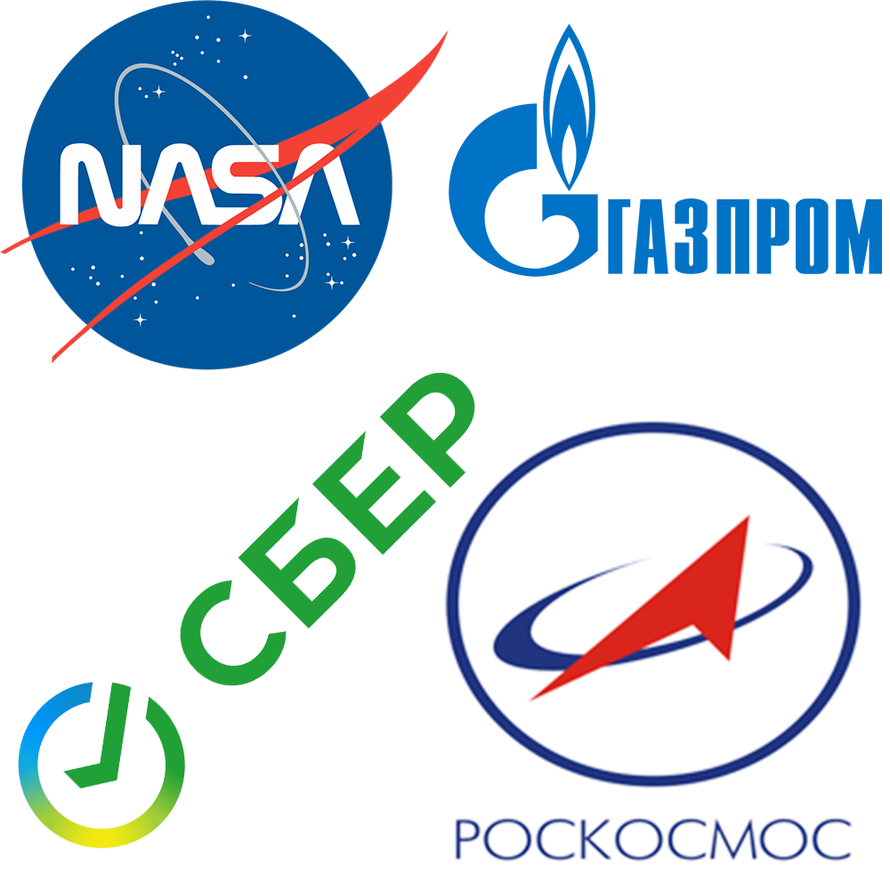

Вступление:
В процессе освоения космоса человечество, хотя и не сразу, столкнулось с проблемой космического мусора. В космическом пространстве за последние десятилетия накопилось огромное количество мусора. С целью борьбы с этой проблемой мы создали свой собственный проект о мусоросборщике.
1) О РАКЕТЕ:
Pegasus - ракета-носитель воздушного базирования, разработанная Orbital Sciences Corporation (OSC), а в настоящее время построена и запущена Northrop Grumman. Способный выводить на низкую околоземную орбиту небольшие полезные грузы весом до 443 кг (977 фунтов), Pegasus впервые совершил полет в 1990 году и остается активным по состоянию на 2022 год. Транспортное средство состоит из трех твердотопливных ступеней и дополнительной монотопливной четвертой ступени. Pegasus отрывается от своего самолета-носителя примерно на высоте 12 000 м (39 000 футов), и его первая ступень имеет крыло и хвостовое оперение для обеспечения подъемной силы и управления ориентацией в атмосфере. Примечательно, что первая ступень не имеет системы управления вектором тяги (TVC).
Характеристики ракеты:
Функция Ракета-носитель
Производитель-Нортроп Грумман
Страна происхождения-США
Стоимость запуска-40 миллионов долларов США
Высота-16,9 м (55 футов) (Pegasus), 17,6 м (58 футов) (Pegasus XL)
Диаметр-1,27 м (4 фута 2 дюйма)
Масса-18 500 кг (40 800 фунтов) (Pegasus), 23 130 кг (50 990 фунтов) (Pegasus XL)
Этапы:3
Вместимость:
Полезная нагрузка на низкую околоземную орбиту
Масса-443 кг (977 фунтов)
Сопутствующие ракеты:
Семья-Воздушный запуск на орбиту
Производная работа-Минотавр-С
Сопоставимый:Электрон, Вектор-H, Сокол 1, Пегас
История запуска
Статус-Активный
Стартовые площадки:Воздушный запуск на орбиту
Общее количество запусков:45
Успехи: 40
Неудачи: 3
Частичный отказы:2
Первый полет- 5 апреля 1990года (Pegsat / NavySat)
2) О МУСОРОСБОРЩИКЕ:
вес: 223 кг,
составные части: антенны УКВ- диапазона(УКВ антенна – это элемент оборудования радиосвязи, работающего в диапазоне ультракоротких волн, преобразующий энергию распространяющихся в пространстве электромагнитных волн в электрические токи и наоборот, что соответствует приему и передаче радиосигнала), УКВ приёмопередатчик(УКВ передатчик космического аппарата - чаще всего работает на частоте 145 или 436 МГц и обеспечивает небольшую скорость передачи данных, с всенаправленной или близкой к всенаправленной бортовой антенной), антенна X диапазона(X-диапазон (X band) — диапазон частот сантиметровых длин волн, используемых в радиолокации, наземной и спутниковой радиосвязи. По определению IEEE, этот диапазон простирается от 8 до 12 ГГц электромагнитного спектра (длины волн от 3,75 до 2,5 см)), камера ДЗЗ(Камера дистанционного зондирования Земли (ДЗЗ) - полезная нагрузка для съемки Земли из космоса, ради которой и проектируется космический аппарат), солнечные датчики(Солнечные датчики на спутниках выполняют роль датчиков ориентации, определяя пространственное положение спутника относительно Солнца), аккумуляторная батарея(Аккумуляторные батареи (АКБ) служат в качестве накопителя энергии, которая расходуется в пиковые режимы энергопотребления или когда аппаратура КА работает на теневом участке орбиты), двигатели- маховики(Маховик двигатель может накапливать кинетическую энергию и отдавать её, что необходимо для сглаживания перепадов крутящего момента)
3) О СПОНСОРАХ, ПАРТНЁРАХ, ИНВЕСТОРАХ, АУДИТОРИИ:

Спонсоры: NASA(Национальное управление по аэронавтике и исследованию космического пространства (англ. National Aeronautics and Space Administration, сокр. NASA (НАСА)) — ведомство, относящееся к федеральному правительству США и подчиняющееся непосредственно президенту США. Осуществляет гражданскую космическую программу страны, а также научные исследования воздушного и космического пространств и научно-технологические исследования в области авиации, воздухоплавания и космонавтики (по терминологии, принятой в США — астронавтики)), CNES(Национальный центр космических исследований (CNE
(административно - "государственное управление промышленного и коммерческого назначения"). Его штаб-квартира находится в центре Парижа и находится под наблюдением французских министерств обороны и исследований), DLR(Немецкий аэрокосмический центр (немецкий: Deutsches Zentrum fur Luft- und Raumfahrt e.V., буквально Немецкий центр воздушных и космических полетов), сокращенно DLR, является национальным центром аэрокосмических, энергетических и транспортных исследований Германии), CNSA(Китайское национальное космическое управление - правительственное учреждение Китайской Народной Республики, отвечающее за управление гражданским космосом и международное космическое сотрудничество, включая организацию или руководство иностранными обменами и сотрудничеством в аэрокосмической области), UKSA(Космическое агентство Соединенного Королевства является исполнительным агентством правительства Соединенного Королевства, ответственным за гражданскую космическую программу Соединенного Королевства)
Партнёры: Роскосмос, Росатом, Сбер, Газпром.
Получение денежных средств на реализацию: государственный грант РФ.
Нашей целевой аудиторией является каждый житель земли.
4) ПРОБЛЕМАТИКА КОСМИЧЕСКОГО МУСОРА:
Под космическим мусором подразумеваются все искусственные объекты и их фрагменты в космосе, которые уже неисправны. Такой мусор, в первую очередь, представляет опасность для успешного запуска новоиспеченных космических аппаратов, но есть и прочие важные проблемы! Собственно, самая очевидная угроза, исходящая от космического мусора, — это угроза физического столкновения. На текущем уровне развития технологий не существует какого-либо способа защитить космические аппараты от небольшого объекта, размером с пулю, движущегося со скоростью 10 км/с. Ну а про защиту от более крупных объектов и заикаться не приходиться, хотя на орбите их существенно меньше. Помимо угрозы повреждения и уничтожения объектов, стартующих с Земли, на орбите находится огромное количество различных спутников, необходимые для работы разных служб.
5) ЗАКЛЮЧЕНИЕ:
Эту проблему мы предлагаем решить запуском космического аппарата- мусоросборщика на орбиту Земли,который будет собирать мусор, сжигая его в атмосфере.